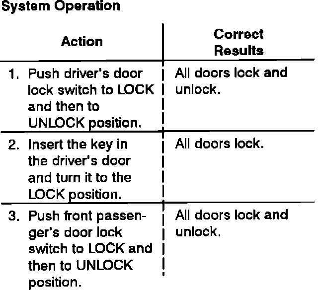

Door Locks: Description and Operation
Power Door Locks System Operation:

Voltage is applied at all times through Fuse 5 to the power door lock control unit.
When you push the driver's door lock switch or front passenger's door lock switch to the LOCK position, a path to ground is supplied to one of the control unit's lock inputs. The power door lock control unit then applies voltage to the door lock actuators which then lock the doors.
When you turn the driver's door lock switch or the front passenger's door lock switch to the UNLOCK position, a path to ground is supplied to the control unit's unlock input. Voltage is then applied to the door lock actuators in reverse polarity which unlocks the doors.
All doors can be electrically locked and unlocked from the driver's door lock switch and the front passenger's door lock switch.
All doors can be electrically locked from the driver's key cylinder if the driver's door is closed. The driver's door can be unlocked mechanically from the outside with a key, but that will not unlock the other doors.